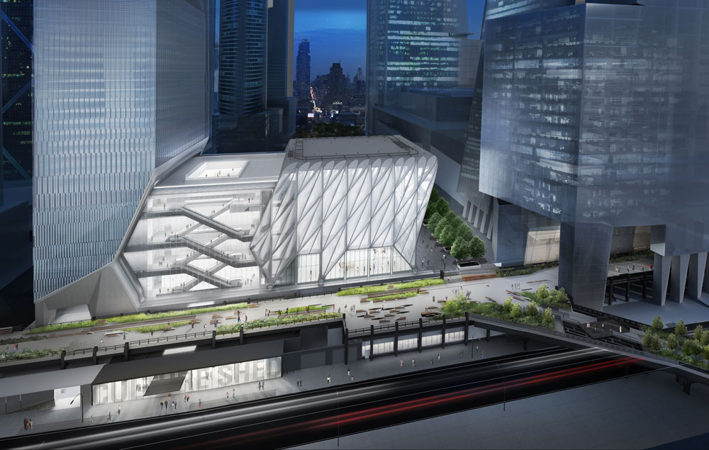
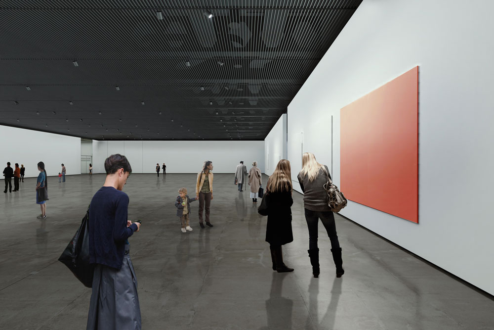
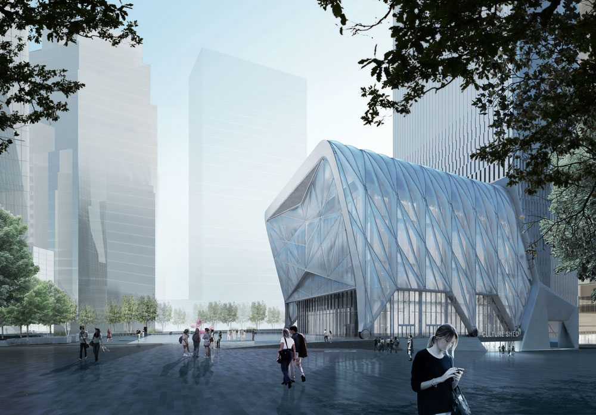
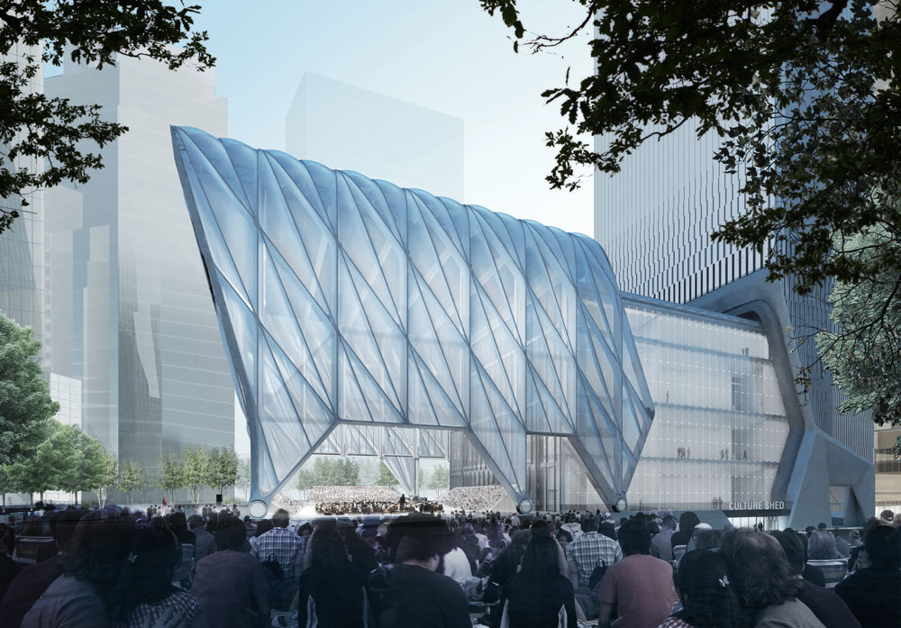
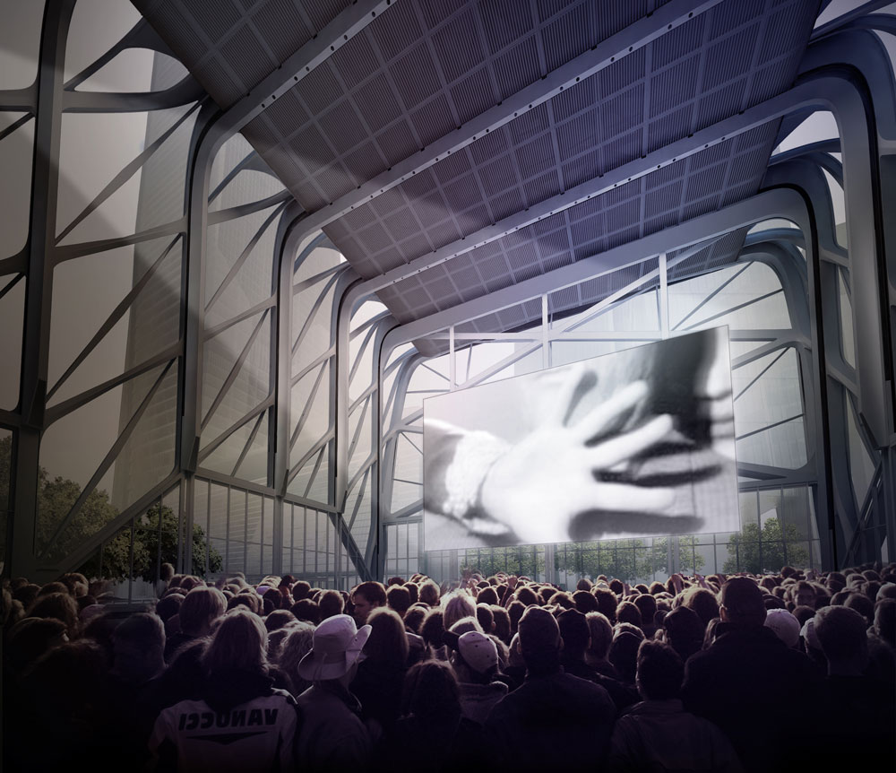

Culture Shed is a nonprofit cultural organization in New York City that will be an international center for artistic and cultural innovation. Its commitment to leading artists, as well as an ever-evolving mix of disciplines and audiences, will promote an expansive view of culture rarely seen in a single location — one which aims to redefine how we present and participate in the arts and culture. As the building expands and contracts, it can work in many configurations, welcoming multiple events simultaneously, including performing arts, visual arts exhibitions, public concerts, festivals, film events, literary events, digital expositions, culinary events, fashion events and forms of artistic and cultural innovation we can’t yet foresee.
Housed in a technically innovative and remarkably agile 200,000 square foot space on Manhattan’s Far West Side, at the intersection of the High Line and Hudson Yards, Culture Shed is expressly designed to accommodate the evolving forms of artistic and cultural expression of the future: innovative, fluid, and technologically enabled. Culture Shed won’t have a permanent collection; instead, it will seek to commission, produce, present and collaborate with artists, innovators, institutions, and creative industries across the spectrum of artistic and cultural production. Led by CEO and Artistic Director Alex Poots, construction is underway on the foundation of Culture Shed, with full construction to begin in mid-2015.
Our Mission
Enabled by its unique combination of large-scale flexible spaces, Culture Shed's mission is to:
- Provide a center for artistic and cultural innovation for leading artists and cultural partners from around the world
- Present and produce wide-ranging and innovative work, including high quality new productions, exclusive exhibitions, special commissions and carefully curated existing works, alongside thoughtfully chosen co-productions, across the spectrum of the arts and creative industries, with a special emphasis on collaboration among cultural disciplines
- Attract and engage diverse audiences, from across the street and around the world
- Provide and program artistic and cultural activities that don't currently have a venue in New York City
- Work with leading international and NYC-based artists and organizations to complement, enhance and realize their creative visions
Why Culture Shed?
Culture Shed is a new kind of venture that responds to today’s shifting arts and cultural landscape: the artists and audiences challenging institutional boundaries and definitions around culture; the dissolving distinctions separating art forms; the global networks being created between far-flung destinations; and the new technology supporting it all.
The Building
Culture Shed’s extraordinary building is a collaboration between Diller Scofidio + Renfro and Rockwell Group. Designed with extensive input from artists and cultural leaders, the building is purpose-built for flexibility to accommodate a broad range of activities that can’t be staged elsewhere in New York. The space includes 40,000 square feet of museum quality exhibition space and a large telescoping outer shed structure that slides open using industrial crane technology to create an additional 17,000 square feet with a flexible ceiling height of up to 110 feet.
Aerial View from South with 30th Street Entrance under the Highline
Gallery Interior
View from North of Nested Shed
View from the north; concert with ticketed audience inside the Shed and open-air broadcast to public space at Hudson Yards
Shed Interior
All Images Courtesy of Diller Scofidio + Renfro in collaboration with Rockwell Group